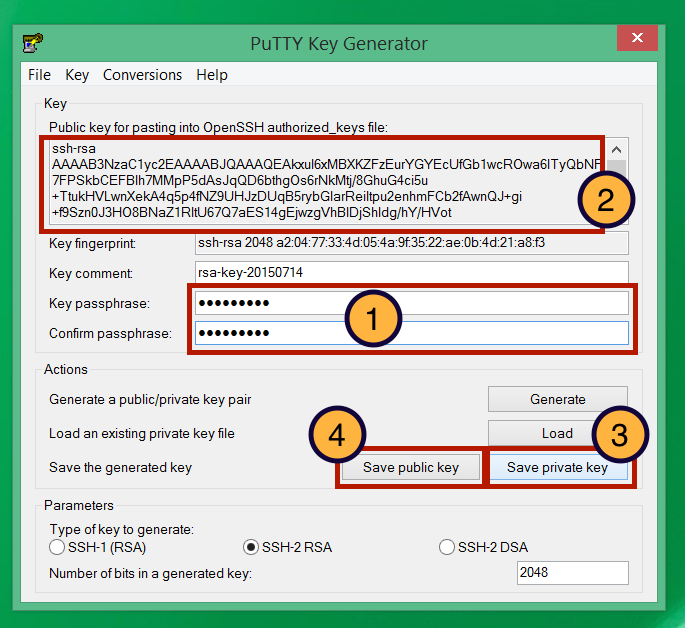

Module 7
Launching and Connecting
Sections of this module:
IntroductionCreate a ssh key
Launching an instance
Connect to the instance
Configuration and control
Connect to a remote desktop
Graphical Interfaces on the ssh terminal
Install a web server
Managing storage
Summary
Appendix
View all sections on one page (Printer friendly)
Create a ssh key
First, we will need to create a ssh key pair for connecting to our instances. An ssh key pair is required to encrypt the data which is transferred to communicate with the instance. The pair consists of two keys: A private key, and a public key. The public key is called “public” because that’s the one which is placed on the server and which you may upload online without worrying about security issues. It is useless without its counterpart, the private key. The private key is the secret key which you keep on your local computer so that you may connect to the instance. You should keep the private key very safe and never share it with anyone. Take care not to lose it, otherwise you won’t be able to connect to your machine. The connection to the machine only works with both keys.
 The image above shows two computers connected through their ports, with an ssh server and client encrypting the connection. Applications can use this secure ssh connection to exchange data.
The image above shows two computers connected through their ports, with an ssh server and client encrypting the connection. Applications can use this secure ssh connection to exchange data.
We will first have to generate this key pair before we can proceed with launching an instance.
The ssh keys will have a name. You should choose a name that you can associate with your instance, for example “Nectar_Key”. As a general rule of thumb, file names should consist of alphanumeric characters and underscores ( _ ) only. You should avoid white spaces. They makes working with files on Unix systems a bit clumsy.
Note: The process differs between Unix/Mac Systems and Windows. Follow the steps described below for your platform, and then continue to the next section.
Mac and Linux
SSH key pairs can be generated with the ssh-keygen command.
If you choose Nectar_Key as your key name, you will have two files after the generation of keys: The private key, called Nectar_Key and the public key, called Nectar_Key.pub.
-
Open your Unix or Mac Terminal. You will start off in your “home” directory. If you already had the terminal open before, make sure you are in the home directory, by simply typing
cd
Now, check if you already have a directory called .ssh, by typing
ls -a
A list of files in your home directory will be printed. If you don’t see the name .ssh in this list, create the directory (if you see the directory, skip this command):
mkdir .ssh
and change to this directory:
cd .ssh
Now generate the key with
ssh-keygen -t rsa -f Nectar_Key
This generates a pair of keys in the directory .ssh, which is the default location for ssh keys.
You will be asked to specify a passphrase. Choose a secure passphrase! But make sure that you store your password somewhere safe - you will not be able to connect to your instance if you forget the password! -
You will have generated (1) a key you keep private, named Nectar_Key and (2) a public key, named Nectar_Key.pub. If you type
ls
Then you should see both files listed. -
Open the public key file with your favourite text editor. If you don’t have a favourite editor, here are some suggestions:
On a Mac, type
open -e Nectar_Key.pub
which should open the key in TextEdit.
On a Linux gnome environment (e.g. Unity), type
gedit Nectar_Key
or if you are using KDE, type
kate Nectar_Key
If you are using another desktop environment we assume you are familiar with your favourite text editor. -
Copy all the text which is contained in the file Nectar_Key.pub into the clipboard. With CTRL+A you can mark all text, and with CTRL+C copy it (on a Mac it is Command (⌘) instead of CTRL). You will need the contents of the public key on the keyboard in one of the next steps.
Windows
Open the PuTTYgen program by clicking on PuTTYgen.exe which you downloaded in the beginning of this tutorial.

-
For Type of key to generate, select SSH-2 RSA.
-
Click on Generate.
-
Move your mouse in the area below the progress bar. When the progress bar is full, PuTTYgen generates your key pair.

-
Type a passphrase in the Key passphrase field. Choose a secure passphrase! Type the same passphrase in the Confirm passphrase field.
-
Right-click in the text field “Public key for pasting into OpenSSH authorized_keys file” and choose Select All. Right-click again in the same text field and choose Copy. This copies the content onto the clipboard, we will need to paste it somewhere else in one of the next steps.
-
Click the Save private key button to save the private key. It is important that you save the key, because you will need the file later. So save it in a folder where you can find it again. In this exercise, we will name the file Nectar_Key.ppk.
-
Save your public key as well by clicking the Save public key button. As a file name, type Nectar_Key.pub.txt.

 This work is licensed under a
This work is licensed under a